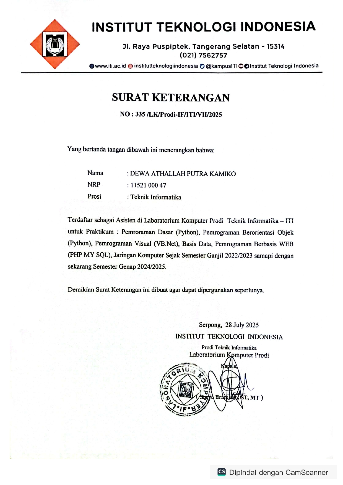

Daftar Proyek

👨‍💻 Asisten Laboratorium
Saya memiliki pengalaman mengajar praktikum sejak 2022 hingga 2025, dengan fokus utama pada topik Jaringan Komputer dan Sistem Operasi.
Selama periode ini, saya bertanggung jawab merancang kurikulum, memfasilitasi sesi hands-on,
dan mengevaluasi mahasiswa untuk memastikan pemahaman mereka terhadap konsep inti dan praktik terbaik
📠Voltnesia
Dalam proyek ini, saya berperan sebagai Software Engineer yang bertanggung jawab penuh atas pengembangan dan integrasi sistem.
Tugas saya meliputi perancangan dan implementasi aplikasi mobile menggunakan Flutter, pengembangan layanan backend,
hingga memastikan perangkat IoT terhubung dan berkomunikasi secara mulus, dengan menggunakan platform Google Cloud sebagai infrastruktur utama/p>
👨‍💻 Infrastruktur & DevOps
Saya merancang dan menerapkan solusi DevOps Monitoring, Clustering, dan Otomatisasi Server berbasis open source untuk meningkatkan efisiensi operasional.
Implementasi ini mencakup klaster Kubernetes (1 Master/Control Plane, 4 Workers),
otomatisasi deployment dengan Ansible, dan sistem monitoring performa yang real-time menggunakan stack Prometheus dan Grafana
👨‍💻 Otomasi Server via Mobile
Saya mengembangkan aplikasi mobile berbasis Flutter yang berfungsi sebagai antarmuka manajemen layanan (service management interface).
Aplikasi ini terhubung ke API backend yang dibangun menggunakan Golang, di mana Golang bertindak sebagai middleware yang aman.
Middleware ini bertanggung jawab untuk mengeksekusi skrip Bash pada server, memungkinkan pengguna mengontrol atau me-restart layanan (service), seperti NGINX, langsung dari perangkat mobile